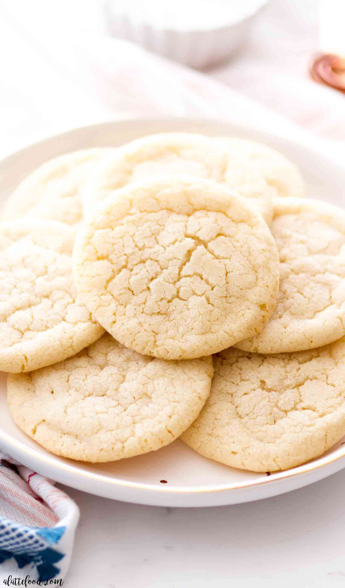

Sugar Cookie Recipe
Back Home

Description
Satisfy your sweet tooth with this top-rated sugar cookie recipe. It comes together with just a few ingredients you likely already have on hand — and the sugar cookies turn out perfect every time.
Ingredients
- Flour: This easy sugar cookie recipe starts with all-purpose flour.
- Leaveners: Baking soda and baking powder act as leaveners, which means they help the cookies rise.
- Butter Two sticks of butter add moisture and richness.
- Sugar Of course, you'll need sugar for sugar cookies!
- Egg An egg lends more moisture and helps bind the cookie dough together.
Steps
- Beat sugar, butter, egg, and vanilla in one bowl; mix flour and leaveners in another.
- Gradually blend the flour mixture into the butter mixture.
- Roll the dough into balls and bake until the edges are golden.